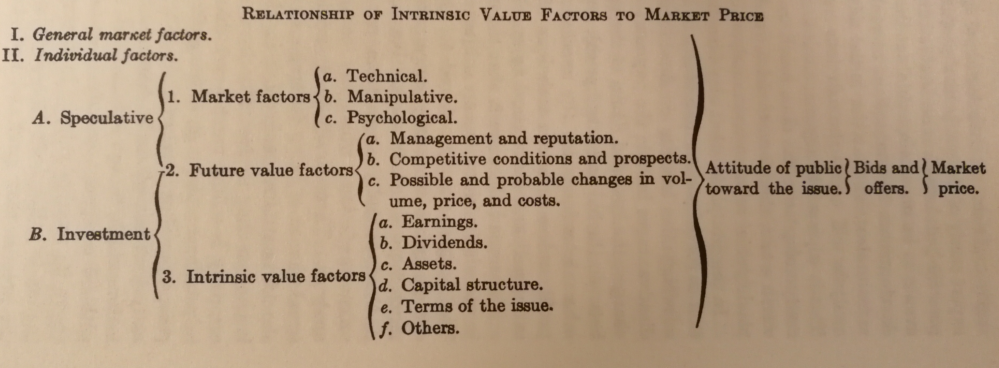

Instead of providing an accurate number of an issue's "actual" market price (i.e. its intrinsic value), security analysis aims to provide a judgement on whether the current market price is justifiable based on intrinsic value factors. It provides a rough range of the issue's intrinsic value, if the current market price is less than the lower bound of the range then it's attractive and we should buy it; if the market price is greater than the upper bound of the range, then ths issue is inattractive and we should sell it if we own the issue. If the market price is within the range then we should not do any action on this issue.
The following figure presents the relationship between intrinsic value factors and the market price:
From the above figure we can see that intrinsic value factors (or intrinsic value) don't determine the market price. There are other factors that constitute to the market price. These factors are out of the scope of security analysis. And security analysis has the following limitations:
Based on the above limitations, security analysis is not a wonder drug, but another rational way to approach the market. Proper usage of rational techniques can make you more likely to win profit. But if luck is the dominant factor of the game then analysis is not so helpful as one may expect. That is why the authors said that security analysis techique is more useful when applied to senior securities (which are protected against change) than to common stocks; more useful when applied to a business of inherently stable character than to one subject to wide variations; more useful when carried on under fairly normal general conditions than in times of great uncertainty and radical change.
The object of security analysis is to answer, or assist in answering this fundamental question: Should security S be bought or sold or retained at price P, at time T by individual I? Security, price, time and person constitute the fundamental elements in the problem of analysis. Different people are suitable for different securities based on their risk tolerance abilities and their financial conditions; A security of the same price may be attractive at time T1 but unattractive at time T2 due to changes happened during T1 and T2; The price of the security maybe higher its intrinsic value so we should not buy it, or lower than its intrinsic value so it becomes attractive.
As for the security, we can analyze it using quantitative or qualitative elements. Quantitative factors include: (1) capitalization, (2) earnings and dividends, (3) assets and liabilities, and (4) operating statistics. Qualitative factors include: (1) nature of the business, (2) the relative position of the individual compant in the industry, (3) its physical, geographical, and operating characteristics, (4) the character of the management, (5) its future prospects, which include the projected trend and inherent stability.
Here is a list of more important sources of information we need to have:
you can contact me via e-mail